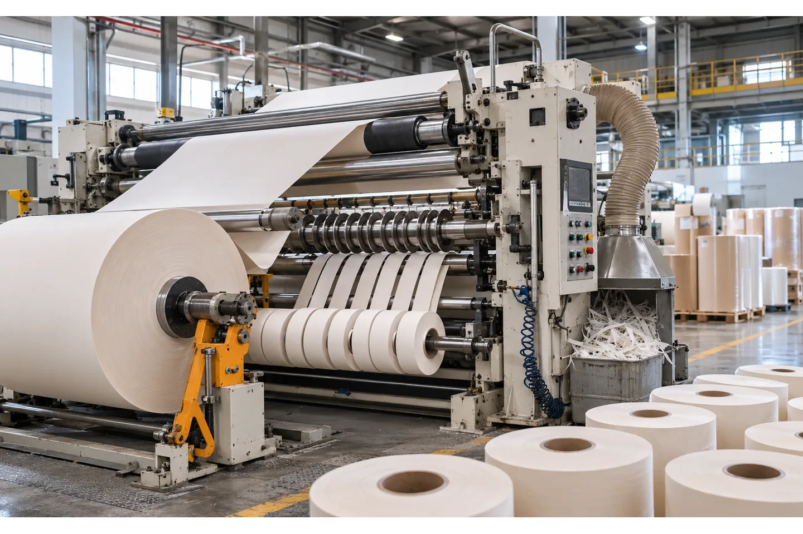
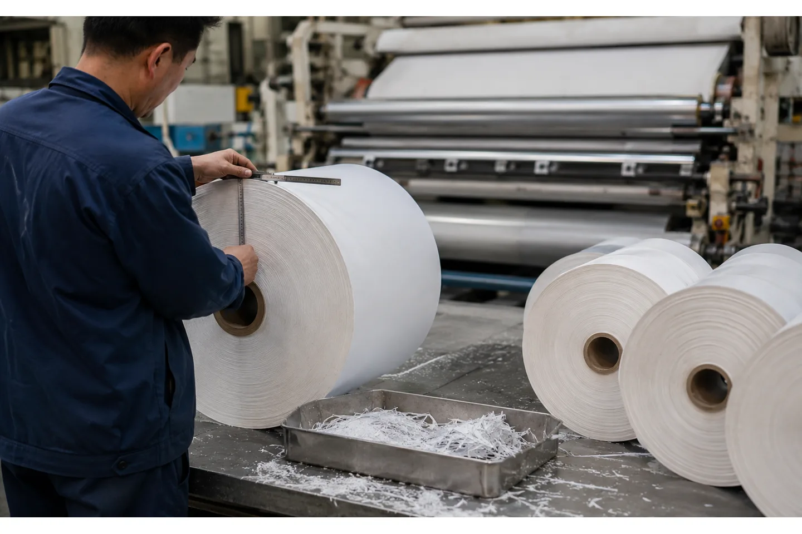

Published August 15, 2026 | By HDPTH Technical Editorial Team


An improperly specified paper slitter rewinder introduces chronic production bottlenecks: excessive dust, telescoped rolls and poorly slit edges that get rejected by downstream packaging lines or printing presses. For converting plant managers and engineers, procuring a new machine requires looking past basic width and speed capacities to engineer a system tailored to the physics of paper.
Whether you process delicate tissue or stiff kraft paper, specifying the right equipment means aligning your material characteristics with the machine's tension zones, blade geometry and winding mechanics. This guide breaks down how to build a comprehensive specification and RFQ for a paper slitting and rewinding machine.
Why paper needs its own slitter rewinder specification
Paper behaves fundamentally differently from films, foils or nonwovens during converting. Attempting to run paper on a machine specified for stretch films will almost certainly result in web breaks and poor roll geometry. A paper slitter rewinder specification must account for three material traits in particular.
First, paper is a fibrous network rather than a continuous homogeneous extrusion. When slit, these fibers break and inherently generate dust. That requires specific blade geometries and active dust extraction to prevent contamination of the final product and the converting environment.
Second, paper is highly hygroscopic. It absorbs and releases moisture with ambient plant humidity, which causes dimensional changes in the web. This variability demands responsive web guiding and tension control to maintain edge alignment and prevent wrinkling as the web travels through the machine.
Third, edge quality and roll hardness matter considerably for paper rolls. A finished roll with a soft edge or inconsistent hardness profile is prone to starring during storage and transit, and can cause web breaks when run at high speed on downstream printing presses or automated packaging equipment.
Core specification parameters for a paper slitter rewinder
Defining the foundational geometric and speed parameters is the first step in building an RFQ for a paper slitter rewinder. The specification must capture both current production requirements and anticipated future formats.
Web width and roll diameters
The machine must accommodate the maximum width of your parent rolls, but you should also specify the minimum parent roll width so the chucks and web guides can handle smaller formats. Unwind and rewind diameters dictate the machine's frame size and motor torque requirements. Specify the maximum parent roll outer diameter (OD) and the target finished roll OD.
Line speed targets
When establishing the operating speed for an offline slitter rewinder, the Flexographic Technical Association's slitter/rewinder selection guidance recommends that the converting machine run at least 1.5 times faster than the primary line supplying the parent rolls, and up to about 2.5 times faster where throughput demands it.
Core sizes and slit widths
Document the internal diameter (ID) of the cores used on both the unwind and rewind sides. Define the minimum slit width required, because it determines the density of the knife holders, as well as the maximum slit width.
Basis weight range
Paper basis weight directly affects the required web tension and the cutting force needed at the slitting station. A machine specified for heavy paperboard will lack the sensitivity needed to handle lightweight tissue. Define the exact minimum and maximum basis weights your plant will process; for reference, HDPTH's automatic row knife slitting machine manual lists an applicable basis weight range of 12–120 g/m², except fluffy products.
Paper grades and machine impact
The physical properties of the specific paper grade govern the required machine configuration. The tension figures below are drawn from JIA HAO Slitter's published guidance for paper slitting, which lists pounds per linear inch (PLI) of web width and taper percentages by grade; they illustrate how wide the tension band can be inside one plant.
| Paper grade | Typical basis weight | Key converting challenges | Machine impact |
|---|---|---|---|
| Tissue | 10–20 lb | Very low tension (0.1–0.3 PLI), gentle taper (10–15%), delicate surface and high stretch risk | Sensitive low-tension control, soft nip and sharp, low-angle blades; dust extraction at the knives |
| Newsprint | 30–35 lb | Moderate tension (0.3–0.5 PLI, 15–20% taper); groundwood fibers generate dust and fuzz | Standard shear slitting with reliable trim and dust handling at high line speeds |
| Uncoated offset | 50–70 lb | Clean edges for print (0.5–0.8 PLI, 20–25% taper); moisture response changes web width | Precise blade overlap and cant angle; stable tension and edge guiding |
| Coated paper | 60–100 lb | Coating dust, edge cracking and scratch risk (0.7–1.2 PLI, 25–30% taper) | Polished dish slitters to minimize friction and dust; coated-surface handling |
| Kraft paper | 40–90 lb | Heavy rolls and strong fibers (0.8–1.5 PLI, 20–25% taper) | Higher unwind braking torque, robust frames and a wider tension control band |
| Label stock | Coated/adhesive construction | Adhesive edge buildup, release-liner dust and coating sensitivity | Shear slitting with polished blades plus dedicated trim and dust removal |
Evaluating a paper converting project?
Share your paper grades, parent roll dimensions and finished roll format with the HDPTH engineering team for a project-specific line configuration review.
Discuss your project with HDPTHChoosing the slitting method for paper
The interaction between the cutting blade and the paper web dictates edge quality and the volume of dust generated. For a broader comparison of the three families of cutting methods, see our guide to razor vs shear vs score slitting methods.
Shear slitting
Shear slitting is the dominant and preferred method for most paper converting applications. It operates like a pair of scissors, using a driven bottom anvil (female blade) and a top slitter (male blade). Proper shear slitting relies on precise blade overlap, cant angle and overspeed, where the bottom anvil is driven slightly faster than the web speed. Optimizing the shear slitting process produces a clean cut with minimal fiber tear. To further reduce friction and dust when shear cutting paper, knife suppliers such as Hyde IBS recommend dish slitters with polished faces.
Score slitting
Score slitting (crush slitting) presses a radius-edged blade against a hardened anvil roll and separates the web by pressure rather than by shearing. It is used for some heavier or abrasive paper grades where a simple, rugged cut is acceptable, but it densifies the slit edge and can generate more dust when blades are worn, so it is usually specified only where shear slitting is not practical.
Razor slitting
Razor slitting, a stationary blade cutting against a grooved roller, appears in some thin, low-basis-weight converting lines. For most paper production, however, shear slitting remains the standard because it produces a cleaner edge with less fiber tear and dust.
Tension control and taper tension for paper
Effective tension control directly determines yield and operational efficiency. A modern paper slitter rewinder divides the web into three distinct tension zones — unwind, slitting and rewind — and closed-loop control in each zone keeps the web taut but unstressed as it travels through the machine, preventing stretching or web breaks.
During rewind, taper tension is critical: it gradually decreases tension as the roll diameter grows. If tension stays constant, the outer layers squeeze the inner layers, leading to starring (a star-shaped collapse near the core) or telescoping during transit.
Different paper grades need drastically different tension profiles. According to JIA HAO Slitter data, light tissue papers require very low, highly sensitive tension settings to prevent stretching, while heavy kraft paper and dense coated stocks demand higher running tensions and steeper taper profiles to maintain roll structure. Verify that the machine's load cells and unwind braking have the range and sensitivity to handle your specific mix of grades without compromising roll density.
Winding method and roll quality
The choice between center winding and surface (drum) winding dictates the quality of the finished rolls. Surface winders, which drive the roll through contact with a powered drum, are effective for large-diameter paper rolls because the roll weight does not strain the rewind shaft. Center winders, driven directly through the core shaft, offer more precise tension control for delicate or pressure-sensitive papers. Our comparison of center winding vs surface winding explains how each method affects roll hardness and material suitability.
Uniform roll hardness requires precise management of nip pressure through lay-on rollers. These rollers apply controlled force against the winding roll, pressing out entrained air that can otherwise create soft spots or uneven profiles. Excessive pressure traps stress and causes starring or corrugations; insufficient pressure allows air entrapment, leading to telescoping or wrinkling during unwinding. A center-surface winder combines both techniques and is often specified when a plant handles diverse paper types.
Web guiding, spreader rolls and edge trim
Consistent edge alignment starts at the unwind stand. Edge position control (EPC) systems use ultrasonic or optical sensors to track the paper edge and shift the unwind roll laterally to correct drift, so the web enters the slitting section aligned. Sensor choice matters less for paper than for transparent films, but the working range and web-speed response should still be confirmed; our web guide sensor selection guide compares the main options.
Before the web reaches the knives, it passes over spreader rolls — often bowed or banana rolls — that apply gentle outward lateral force to smooth wrinkles and baggy edges. Proper spreading keeps the paper flat against the blades for a crisp cut.
Edge trim and dust handling belong in the specification. High-velocity trim conveyance pulls the continuous edge trim away from the slitting zone for recycling, and dust extraction hoods positioned at the slitting station capture fine paper dust before it contaminates finished rolls or settles on machine components and sensors. The Engineered Recycling Systems guidance for paper converting trim removal notes that tissue, coated papers, release liners and label stock all benefit from vacuum trim handling and dust filtration. See also our article on slitter rewinder dust extraction systems and edge trim recovery on a slitter rewinder.
Knife systems and changeover automation
In high-mix production, manual slitter blade adjustments create bottlenecks: operators spend time measuring, setting and locking individual knife pairs, with the risk of inconsistent slit widths. HDPTH automatic knife systems run on its automatic row knife slitting line with full-servo PLC control, so width changes are driven from a saved recipe instead of manual repositioning, and a trimming recovery option supports waste handling. For plants with frequent width changes, automatic knife positioning is worth evaluating in the RFQ.
RFQ data checklist for paper
When preparing a request for quotation for a paper slitter rewinder, accurate data is critical for machine sizing and configuration. Ensure the following eight items are clearly defined:
- Paper grade and basis weight range: the specific grades and the complete basis weight range to be processed.
- Parent roll specifications: width, maximum diameter, core size and total roll weight.
- Finished roll format: minimum and maximum slit widths, target rewind diameter and required rewind core sizes.
- Speed target: the desired operating speed in m/min.
- Tension range: expected PLI or N/m requirements, if known from existing material handling data.
- Slitting method preference: shear, score or razor, matched to the paper characteristics.
- Dust and trim handling: requirements for dust mitigation and trim removal or recovery.
- Trial rolls: a commitment to supply parent rolls of the actual production material for factory testing.
Factory acceptance testing (FAT) and acceptance criteria for paper
A comprehensive factory acceptance test validates that the equipment meets operational requirements before shipment. The testing protocol must run the buyer's actual paper grades at target production speeds to simulate real conditions. During sustained runs, verify slit edge quality and confirm that dust levels stay within acceptable parameters, then evaluate finished rolls for telescoping and roll hardness consistency from the core to the outer diameter. Monitor tension stability during acceleration, deceleration and steady-state running, and time a complete width changeover to confirm the machine meets the agreed mechanical flexibility and downtime targets. Our slitter rewinder factory acceptance test checklist provides a fuller set of items.
Installation preparation and shipment
Proper facility preparation eases installation and commissioning. Before shipment, finalize the floor layout and material-handling pathways for moving parent rolls into the unwind station and extracting finished rolls from the rewind section. Route compressed air and three-phase power to the installation point in advance, and verify machine guarding at the point of operation and all ingoing nip points; 29 CFR 1910.212 sets out this general requirement in the United States.
The HDPTH project-based approach
HDPTH builds custom slitting equipment for paper and flexible material converters, and one high-speed slitting machine platform can process multiple material categories, including paper. Its slitting and rewinding lines suit nonwoven, paper and other flexible roll materials, can include multiple unwind stations, and factory testing verifies tension stability, roll quality and operating sequence before delivery.
Product manual reference parameters for the automatic row knife slitting machine include 500–1200 m/min production speed, 1200–2500 mm unwinding diameter, up to 1200 mm rewinding diameter, 45–65 mm minimum slitting width and 1500–4500 mm effective winding width; actual speed depends on material and width. HDPTH rewinding machines cover custom rewinding widths from 1,000–4,500 mm, rewinding diameters up to 2,500 mm and core sizes from 75–250 mm in the product manual range.
HDPTH is a member of the Household Paper Professional Committee, and configurations for paper projects are project-based: material, width, speed, knife system, winding method and controls are confirmed from customer requirements before quotation. The certificates page documents this recognition alongside the company's technology enterprise credentials.
Buyer FAQs
What slitting method is best for paper?
Shear slitting is the standard choice for paper converting because it produces a clean, precise cut without crushing the material edge. It uses a top and bottom rotating blade pair in a scissor-like action that minimizes dust and supports high edge quality.
What tension should be used when slitting paper rolls?
The ideal tension depends heavily on the paper grade, with light tissue requiring very low tension and heavy kraft paper needing much higher tension to maintain roll structure. Closed-loop control with taper tension gradually decreases the pull as the rewind roll diameter increases.
How do I prevent telescoping on a paper slitter rewinder?
Telescoping is primarily prevented by applying proper taper tension and correct nip pressure through lay-on rollers during the rewind phase. Consistent core alignment and a winding method matched to the paper grade also reduce the trapped air and stress variations that make rolls shift laterally.
Do paper slitting machines need dust extraction?
Yes, dedicated dust extraction is important for paper slitting because the cutting process generates fine particulate matter. Vacuum systems protect the finished product from contamination and prevent abrasive paper dust from accumulating on sensitive machine components and sensors.
What should I verify during a paper slitter rewinder FAT?
During the factory acceptance test, run your own paper grades at target production speeds to evaluate edge quality, dust levels and roll hardness. Confirm tension stability across acceleration, deceleration and steady-state running, and time a complete width changeover.
Sources
- Flexographic Technical Association: Selecting a Slitter/Rewinder — A Flexographer's Guide
- eCFR: 29 CFR 1910.212 General Requirements for All Machines
- Engineered Recycling Systems: Trim & Dust Removal for the Paper Converting Industry
- Hyde IBS: Industrial Slitter Knives & Core Cutters
- JIA HAO Slitter: Why Your Current Paper Slitter Creates Telescoping and How to Fix It
- TAPPI: Optimizing the Shear Slitting Process
Ready to specify a paper slitter rewinder?
Share your paper grades, basis weight range, parent roll dimensions, finished roll format and speed target with the HDPTH engineering team, or contact Wilson Wu via WhatsApp at +86 13645700210. Configurations are project-based, and material trials and factory testing are part of the review.
Send an RFQ to HDPTH